La ventana de Microsoft Word

Barra de herramientas de acceso rápido:
Barra de título:
Cinta de opciones:
Barras de desplazamiento:
Zoom
- Puedes pulsar directamente el valor porcentual (que normalmente de entrada será el tamaño real, 100%).
Se abrirá una ventana donde ajustar el zoom deseado.
- O bien puedes deslizar el marcador hacia los botones - o + que hay justo al lado, arrastrándolo.
Vistas del documento:
Barra de estado:
Cinta de opciones
La cinta de opciones es la barra más importante de Word, porque contiene todas las opciones que se
pueden realizar con los documentos.
- Las herramientas están organizadas en pestañas o fichas (Inicio, Insertar, Vista...),
que a su vez están divididas en grupos
- Algunos grupos de herramientas de la cinta disponen de un pequeño botón en su esquina inferior derecha:
Este botón abre un panel o cuadro de diálogo con más opciones relacionadas con el grupo en cuestión.
Observaciones:
- Las pestañas pueden estar disponibles o no. La cinta tiene un comportamiento "inteligente", que consiste en
mostrar determinadas pestañas únicamente cuando son útiles, de forma que el usuario no se vea abrumado por una
gran cantidad de opciones. Por ejemplo, la ficha Herramientas de tabla no estará visible de entrada, únicamente
se mostrará si insertamos una tabla en nuestro documento y la seleccionamos.
- Ésta función permite una mayor comodidad a la hora de trabajar, pero si en algún momento queremos
ocultar o inhabilitar alguna de ficha de forma manual, podremos hacerlo desde el menú Archivo > Opciones >Personalizar Cinta de opciones,
o pulsando con el botón derecho sobre la cinta de opciones y elegiendo Personalizar Cinta de opciones.
- Pulsando la tecla ALT entraremos en el modo de acceso por teclado. De esta forma aparecerán pequeños
recuadros junto a las pestañas y opciones indicando la tecla (o conjunto de teclas) que deberás pulsar para
acceder a esa opción sin la necesidad del ratón.
Mostrar/Ocultar la cinta de opciones.
Si haces doble clic sobre cualquiera de las pestañas, la barra se ocultará, para disponer de más espacio de
trabajo. Las opciones volverán a mostrarse en el momento en el que vuelvas a hacer clic en cualquier pestaña.
También puedes mostrar u ocultar las cintas desde el botón ocultar y mostrar pestañas de la zona derecha
superior que abirá la ventana que se muestra a continuación, con tres opciones:
Ficha archivo
La pestaña Archivo se encuentra destacada en color azul. Porque, a diferencia del resto de pestañas,
no contiene herramientas para la modificación y tratamiento del contenido del documento, sino más bien
opciones referentes a la aplicación y al archivo resultante. Al situarnos en esta pestaña, se cubre el documento
con un panel de opciones, es por ello que Microsoft ha llamado a esta vista la Vista Backstage.
- La principal característica de la ficha Archivo es que para cada comando de la parte izquierda aparecen unas
opciones en la parte central, y a su vez, para cada una de estas opciones aparecen otras opciones más en la parte
derecha de la pantalla. Por ejemplo, en la imagen vemos como el comando Abrir genera las opciones Documentos
recientes, SkyDrive, ... y al seleccionar Documentos recientes aparece una lista con varios documentos recientes.
- Otra particularidad es la presencia del botón botón atrás
 para volver atrás que sólo aparece en la ficha Archivo.
para volver atrás que sólo aparece en la ficha Archivo.
Pestaña Vista
Ver varios documentos a la vez
-
En la pestaña Vista encontramos el grupo Ventanas, que nos ayudará a decidir cómo organizar las
ventanas de Word en caso de que estemos trabajando con más de un documento a la vez.
-
El botón Cambiar ventanas despliega un menú con el nombre de cada uno de los documentos abiertos, permitiéndonos
elegir cuál queremos ver en primer plano.
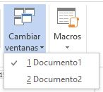
-
Al pulsar el botón Organizar todo se situará un documento sobre el otro, permitiéndote ver los dos de forma simultánea.
Solo una de las ventanas es la ventana activa: la que tiene la barra de título más coloreada.
Para hacer que una ventana se convierta en la ventana activa basta con hacer clic dentro del área de la ventana.
- Podemos variar el tamaño y la posición de cada ventana a nuestro gusto.
- Para modificar el tamaño hay que situar el cursor en el borde de la ventana y arrastrarlo cuando tome forma de
flecha bidireccional. Los bordes superior e inferior alterarán la altura, los bordes laterales la anchura y las esquinas ambas.
- Para cambiar la posición, arrastra la ventana desde su barra de título.
Dividir pantalla
Podemos crear una línea de separación dentro de un mismo documento, pudiendo utilizar la zona superior y la inferior de
forma independiente y trabajar con ellas como si de un duplicado se tratase. Esta opción es especialmente útil en documentos
extensos en que necesitamos ver dos partes del mismo a la vez constantemente, pero que distan mucho entre sí. Así nos
evitamos tener que ir cambiando de página una y otra vez.
Encontraremos esta herramienta en pestaña Vista > grupo Ventanas > Dividir
Cuando hayamos incluido una división, el botón se convertirá en Quitar división y al pulsarlo de nuevo
la podremos eliminar.
Vistas
Con la barra inferior puedes cambiar la forma en que visualizas el documento, o lo que es lo mismo,
la vista  . Desde esta barra tenemos acceso a las vistas Modo lectura, Diseño de impresión
y Diseño web.
. Desde esta barra tenemos acceso a las vistas Modo lectura, Diseño de impresión
y Diseño web.
Para acceder a todas las vistas: pestaña Vista > grupo Vistas de documento.
Diseño de impresión
Es la vista predeterminada. El documento se ve tal y como se imprimirá, con gráficos, imágenes, encabezados
y pies de página, etc.
Modo lectura
Esta vista permite visualizar la página de una forma muy limpia, con pocos elementos para
facilitar la lectura. Si el espacio de la pantalla lo permite, muestra dos páginas por pantalla.
En esta vista no se ven los encabezados y pies de página.
Esta pantalla de lectura tiene las siguientes tres características:
- Cuando tenemos la pantalla maximizada, ocupando todo el espacio, se mantiene una pantalla
con los mínimos elementos para que la lectura sea más cómoda.
- En la parte izquierda y derecha tiene unas flechas para retroceder y avanzar página.
- En la parte inferior la barra de estado cambia el diseño como muestra la siguiente imagen:
Tiene un botón blanco que permite desplazarse rápidamente por todo el documento y en la barra
de estado desaparecen las indicaciones del idioma y del número de palabras.
Observación:
Cuando cerramos un documento en modo lectura y lo volvemos a abrir más
tarde, Word nos muestra un aviso por si queremos volver al punto exacto donde dejamos el documento.
Basta con hacer clic en  para ir al punto donde habíamos dejado la lectura la última vez. Pasados unos segundos, el aviso se hace
más pequeño .
Si no haces clic en el aviso, este desaparece al poco tiempo.
para ir al punto donde habíamos dejado la lectura la última vez. Pasados unos segundos, el aviso se hace
más pequeño .
Si no haces clic en el aviso, este desaparece al poco tiempo.
Diseño Web
Se utiliza para ver el aspecto de un documento Web tal y como se vería desde un navegador como Internet
Explorer o Firefox si lo publicáramos.
Esquema
En esta vista se puede observar y editar la jerarquía de los apartados que conforman el
documento. Profundizaremos en esta vista a lo largo del curso.
Borrador
En esta vista se optimiza el tamaño de la hoja y de las fuentes, para facilitar la lectura en pantalla.
Se muestra con la misma longitud de línea que en la versión impresa, pero elimina elementos como los encabezados o pies
de página, que suelen ser más retoques para la publicación que contenido útil en un borrador.
Guardar, abrir y cerrar documentos
Guardar documentos
Lo que se escribe se va almacenando en la memoria de tu ordenador; si el ordenador se apagara accidentalmente,
se perdería y no lo podrías recuperar. Con el comando Guardar quedará grabado en el disco duro del ordenador (o en un dispositivo externo, como una memoria usb) de forma permanente.
Haz clic en el icono Guardar de la zona superior izquierda o pulsa las teclas CTRL+G y aparecerá una ventana similar a esta.
Aquí debes elegir en qué unidad guardas el archivo, para guardarlo en el disco duro de tu ordenador selecciona Equipo y pulsa el botón Examinar para que se abra un cuadro de diálogo como el siguiente.
Para guardar un documento debes indicar el nombre con el que lo quieres guardar, el tipo de documento que estás guardando
y la carpeta que contendrá tu documento:
- El nombre lo indicamos en el campo Nombre de archivo.
- El tipo del documento para los documentos Word será Documento de Word, que ya viene escrito por
defecto.
Observación:
Los documentos dentro del disco duro están organizados en carpetas. Por defecto normalmente
se guardarán en la carpeta Mis documentos. Pero siempre podrás elegir otra carpeta o incluso, como comentábamos,
guardarlo en un disco extraíble.
Una vez hayas definido los tres aspectos, deberás hacer clic en el botón Guardar. La barra de título indicará
el nombre que le hayas dado en lugar de Documento1.
Cerrar documentos
Después de guardar un documento, Este continúa en nuestra pantalla y podemos seguir trabajando con él. Una vez
que hemos acabado de trabajar con un documento debemos cerrarlo.
Para cerrar un documento hacer clic en el botón Archivo , y luego hacer clic en Cerrar. Si hemos hecho alguna
modificación en el documento desde la última vez que lo guardamos, nos preguntará si queremos guardar los
cambios; contestar que Sí. Al cerrar el documento veremos cómo este desaparece de la pantalla y vemos el fondo
gris de la ventana Word. El programa sigue abierto, permitiéndonos crear un nuevo documento o abrir uno
existente.
Abrir un documento
Para utilizar un documento que tenemos guardado debemos abrirlo. Para ello hacer clic en la pestaña Archivo
 y seleccionar la opción Abrir, o bien pulsar las teclas CTRL+A. Aparecerá una ventana similar a la que
vemos aquí.
y seleccionar la opción Abrir, o bien pulsar las teclas CTRL+A. Aparecerá una ventana similar a la que
vemos aquí.
Para abrir un documento de los que se muestran en la columna Documentos Recientes, basta con hacer clic
sobre él. Si el documento que queremos abrir no se encuentra en esa lista podemos hacer clic en Equipo.
Ahí podremos hacer clic en una de las carpetas que se muestran o hacer doble clic sobre el documento que
deseamos abrir.
Para abrir un archivo de los que aparecen en la ventana lo hemos de seleccionar haciendo clic sobre él
(quedará marcado de color azul) y luego pulsar en el botón Abrir. Otra forma más rápida de abrir el documento
es haciendo doble clic sobre él. Inmediatamente el documento aparecerá en nuestra pantalla.
Cerrar Microsoft Word
Una vez hemos acabado de trabajar con Word debemos cerrarlo. Para ello, podemos realizar cualquiera de
las siguients acciones:
- Hacer clic en el botón Archivo y eligir la opción Cerrar, como se puede
apreciar en la siguiente imagen:
- Utilizar la combinación de teclas rapida para cerrar la aplicación: ALT+F4.
- La forma más usual de cerrar el programa es la misma que con la mayoría de ventanas en Windows,
presionar
 en la esquina superior derecha del programa:
en la esquina superior derecha del programa:
Edición de documentos en Microsoft Word
Punto de inserción y cursor (puntero)
- El punto de inserción es una pequeña barra vertical parpadeante que
marca tu posición en el texto y donde esté situada es donde se introducirá el texto que teclees. Va avanzando
conforme vayas escribiendo. El cursor tiene esta forma cuando está dentro del área de texto, la cual esta delimitada por
las reglas.
- El cursor por otro lado aparece cuando se está encima de los menús, o fuera del area las reglas.
Observaciones:
- No confundas el punto de inserción con el puntero del ratón.
- Cuando mueves el ratón, lo que estás moviendo es el puntero; cuando pulsas las teclas de dirección del teclado,
mueves el punto de inserción.
- Escribir un primer documento en Word básicamente se trata de teclear el texto y controlar siempre dónde está
situado el punto de inserción.
Dezplazamiento
Cuando estamos viendo un documento Word que no cabe en una pantalla, necesitaremos movernos por el documento para colocarnos en la parte que nos interese.
Desplazamientos cortos dentro de una misma pantalla:
Ratón:
Desplazar el cursor del ratón hasta el punto elegido y hacer clic, el punto de inserción se
colocará en ese lugar.Teclas de dirección:
Las teclas izquierda/derecha desplazan el punto de inserción una posición a la
izquierda/derecha, y las teclas arriba/abajo desplazan el punto de inserción una línea arriba/abajo.
La tecla FIN nos lleva al final de la línea y la tecla INICIO al principio de la línea.
| Para desplazarse |
Presione las teclas |
| Una palabra a la izquierda |
CTRL + flecha izquierda |
| Una palabra a la derecha |
CTRL + flecha derecha |
| Un párrafo arriba |
CTRL + flecha arriba |
| Un párrafo abajo |
CTRL + flecha abajo |
Desplazamientos a lo largo de todo el documento:
Teclas AvPág y RePág. Estas teclas avanzan y retroceden una pantalla completa. Observad que no es lo mismo una
pantalla que una página. El tamaño de la pantalla lo limita el monitor mientras que la longitud de la página
la definimos nosotros.
| Para desplazarse |
Presione las teclas |
| Una página adelante |
CTRL + AvPág. |
| Una página atrás |
CTRL + RePág. |
| Al principio del documento |
CTRL + Inicio |
| Al final del documento |
CTRL + Fin |
Mediante las Barras de desplazamiento
Las barras de desplazamiento permiten movernos a lo largo y ancho del documento de forma gráfica.
La longitud de barra de desplazamiento vertical representa la longitud del documento y el cuadrado
pequeño que hay en su interior representa la posición actual del punto de inserción.
- Haciendo clic en cualquier posición por encima/debajo del cuadro nos desplazaremos una pantalla
hacia arriba/debajo del documento.
- Arrastrando el cuadro nos desplazaremos proporcionalmente a la posición en la que lo movamos.
- Mediante las flechas. Si hacemos clic en la flecha o triángulo de la parte
 Subir superior/inferior
Bajar
Subir superior/inferior
Bajar  nos desplazaremos una línea hacia arriba/abajo. Si mantenemos pulsada la flecha nos desplazaremos línea
a línea de forma rápida hasta que la soltemos.
nos desplazaremos una línea hacia arriba/abajo. Si mantenemos pulsada la flecha nos desplazaremos línea
a línea de forma rápida hasta que la soltemos.
Las barras de desplazamiento horizontal. Permiten movernos de forma similar a como acabamos de ver con la barra
vertical pero en sentido horizontal, es decir, permiten desplazar el documento hacia la derecha y hacia la izquierda.
Se utilizan menos porque es menos frecuente que el documento sea más ancho de lo que cabe en una pantalla.
Panel de navegación
En la barra de estado, al hacer clic sobre la zona de la izquierda, donde aparece el número de página, se abre un panel
de Navegación similar a la que puedes ver en esta imagen.
Tiene tres pestañas para navegar por:
- El índice con los títulos que se generan automáticamente al insertar títulos en el documento.
Haciendo clic en un apartado de ese índice nos desplazaremos a la parte del documento que lo contiene.
- Por miniaturas de las páginas.
- Por resultados de la búsqueda que hemos realizado utilizando la caja de búsqueda que hay justo encima.
También podemos abrir el panel de navegación desde la pestaña Vista, opción Panel de navegación, como se muestra en la imagen.
Ir a.
Cuando el documento es muy extenso, puede resultar incómodo realizar el desplazamiento de las formas
que hemos visto. Imagina que estás trabajando con un documento de 500 páginas y quieres ir a la página
50. Sería una pérdida de tiempo ir página a página. En esas ocasiones resulta resulta muy practico
utilizar la opción Ir a. Esta opción se encuentra en:
Pestaña Inicio > grupo Edición > menú Buscar > Ir a  .
.
Tambien podemos emplear la combinación de teclas CTRL + I o bien haciendo clic
en Página ## de ## en la barra de estado
A la izquierda puedes seleccionar dónde quieres ir, y a la derecha especificar el valor.
Por ejemplo Página, elegir un Título, un Comentario, etc.
Selección
Muy frecuentemente en Word es necesario realizar acciones como: copiar, cambiar el formato, etc.,
y para ello tenemos que "decirle" a Word sobre qué parte de texto tiene que actuar; esto es tenemos que
seleccionar el texto.
Las dos maneras mas directas de seleccionar texto es con el ratón y con el teclado:
Ratón
Para seleccionar con el ratón hay dos métodos:
- Arrastrando: Colocar el cursor al principio de la selección, presionar el botón izquierdo y,
sin soltar el botón, mover el cursor hasta el final de la selección.
- Haciendo clic's:
- Colocar el cursor en una palabra y hacer doble clic: la palabra completa quedará seleccionada.
-
Colocar el cursor justo al inicio de la línea, veremos que el cursor cambia de forma y se convierte
en una flecha , hacer clic y la línea completa quedará seleccionada; si hacemos doble clic, el párrafo
completo quedará seleccionado.
- Para seleccionar un gráfico o una imagen basta con hacer clic encima, el gráfico quedará enmarcado
por un recuadro negro.
Teclado
| Para seleccionar |
Presione las teclas |
| Un carácter a la derecha |
Mayús. + flecha derecha |
| Un carácter a la izquierda |
Mayús. + flecha izquierda |
| Palabra a la derecha |
Ctrl + Mayús.+ flecha derecha |
| Palabra a la izquierda |
Ctrl + Mayús.+ flecha izquierda |
| Hasta el final de la línea. |
Mayús. + Fin |
| Hasta el principio de la línea. |
Mayús. + Inicio |
| Una línea abajo |
Mayús. + flecha abajo |
| Una línea arriba |
Mayús. + flecha arriba |
| Hasta el final del párrafo |
Ctrl + Mayús. + flecha abajo |
| Hasta el principio del párrafo |
Ctrl + Mayús. + flecha arriba |
| Una pantalla abajo |
Mayús. + AvPág |
| Una pantalla arriba |
Mayús. + RePág |
| Todo els documento |
Ctrl + E |
Opción Seleccionar.
En la pestaña Inicio > grupo Edición > opción Seleccionar.
Eliminar
Para borrar o eliminar lo seleccionado basta con presionar la tecla SUPR, otra forma de borrar sin seleccionar previamente
es utilizando las teclas, como se indica en la siguiente tabla:
| Para borrar |
Presione las teclas |
| Un carácter a la izquierda |
Retroceso (BackSpace) |
| Una palabra a la izquierda |
Ctrl + Retroceso |
| Un carácter a la derecha |
Supr |
| Una palabra a la derecha |
Ctrl + Supr |
Observación:
Para borrar una palabra errónea basta con hacer doble clic sobre ella
para seleccionarla y pulsar la primera letra de la palabra correcta, automáticamente se borrará la
palabra seleccionada y podremos seguir escribiendo en su lugar la palabra correcta.
Teclas retroceso y suprimir
- Cuando cometas un error, y te des cuenta inmediatamente, pulsa la tecla RETROCESO
una vez para que retroceda una posición borrando la última
letra tecleada. Si mantienes la tecla pulsada, seguirá borrando letra tras letra hasta que la sueltes, así que utilízala con cierto cuidado
para controlar su efecto.
- Es posible que no te des cuenta del error hasta después de haber escrito unas cuantas letras más. En ese caso no sería factible que borraras
toda la frase por un error que está al principio de la misma. Lo normal es que desplaces el punto de inserción hasta el error y una vez te
hayas situado, utilices el RETROCESO.
- Si te das cuenta del error cuando tienes el punto de inserción lejos de él, lo mejor es hacer clic tras la letra que queremos borrar.
La tecla suprimir (DEL o SUPR) también se borra una letra, pero la que queda a la derecha del punto de inserción.
Una de las ventajas que han aportado los procesadores de texto es la facilidad para modificar y corregir. El primer paso en ese proceso es colocarnos en el lugar donde vamos a efectuar la modificación.
Deshacer y rehacer
La última acción realizada.
Para deshacer la última acción realizada, pulsar el icono Deshacer, deshacer de la barra de acceso rápido.
Otra forma más de deshacer es pulsar CTRL + Z.
Las últimas acciones realizadas.
Si hacemos clic en el triángulo que hay a la derecha del icono deshacer deshacer, aparecerá una lista con últimas
acciones para deshacer, colocando el cursor en esa lista podremos deshacer varias acciones a la vez.
Por ejemplo, al colocar el cursor en la tercera línea de la lista desharemos tres acciones.
Rehacer.
Utilizando el icono Rehacer, de la misma forma, podemos rehacer las acciones que acabamos de deshacer. Por ejemplo,
si ponemos en cursiva un párrafo y deshacemos la acción porque pensamos que no queda bien en cursiva
pero al cabo de un momento pensamos que sí queda mejor en cursiva podemos rehacer la acción y volver a dejarlo en cursiva.
Otra forma de rehacer es pulsar CTRL+ Y.
Repetir formato.
Cuando el botón Rehacer no está activo, en su lugar aparece el botón Repetit formato repetir formato que permite repetir
la última acción de formato realizada.
Copiar, cortar y pegar
Mediante el ratón y los iconos en el grupo Portapapeles de la pestaña Inicio
- Seleccionar el elemento (carácter, palabra, párrafo,..) a copiar o cortar.
- Hacer clic en el icono copiar o cortar,
- Colocar el cursor en el punto de destino y hacer clic en el icono pegar
Ratón
Se tienen un par de métodos:
-
Seleccionar con doble clic, presionar el botón derecho, elegir copiar o cortar, en el menú
contextual ir a la posición donde vamos a copiar o pegar, presionar botón derecho y elegir pegar.
-
Seleccionar con doble clic, presionar el botón derecho, cuando aparezca un pequeño cuadrado debajo
del cursor, sin soltar, ir a la posición donde vamos a copiar, soltar el botón y aparecerá un menú:
elegir la opción copiar aquí.
Teclado
Primero, seleccionar el texto utilizando la combinación de teclas: MAY + flechas. Luego,
copiamos con la combinación Ctrl+ C. Y por último, vamos a la posición donde vamos
a pegar y pulsamos Ctrl+ V.
Observación:
Cuando copiamos o cortamos, Word lo almacena en el Portapapeles, de esta manera disponemos de los
últimas elementos que hemos copiado y en cualquier momento podemos volver a copiar una de ellas.
Portapapeles
El Office portapapeles almacena texto y gráficos que copia o corta desde cualquier lugar y le permite pegar
los elementos almacenados en cualquier otro documento de Office. Por ejemplo, puede copiar texto de un mensaje de correo electrónico,
datos de un libro u hoja de datos y un gráfico de una presentación y luego pegarlos todos en un documento.
Al usar el Portapapeles de Office, puede organizar los elementos copiados de la forma que desee en el documento.
Opciones para pegar texto
Cada vez que pegamos se copia el texto tal y como lo copiamos, con el formato que tenía.
Sin embargo, en ocasiones puede interesarnos que no se copie el formato
Debajo del icono Pegar aparece una flecha. Si hacemos clic en ella se despliega una lista con las opciones que tenemos
diponibles:
De izquierda a derecha, las opciones permiten:
- Mantener el formato de origen (opción predeterminada).
- Combinar formato.
- Mantener sólo texto, que copiará el texto, pero sin los estilos que tenga.
Al hacer clic en Pegado especial..., se abre una ventana como la que se observa a continuación.
En ella te permite elegir cómo pegar el elemento de entre distintos formatos. Por ejemplo, podrías convertir un texto que hayas copiado a objeto de tipo imagen.
Desde el apartado Resultado puedes consultar la descripción de la acción que realizará cada tipo de pegado, simplemente seleccionándolo en la lista superior.
Copiar formato
En la pestaña Inicio > grupo Portapapeles, tenemos disponible el icono para Copiar formato
 . Este icono permite
copiar las características de formato de un texto para aplicarlas a otros textos. Podemos copiarlo una o varias veces:
. Este icono permite
copiar las características de formato de un texto para aplicarlas a otros textos. Podemos copiarlo una o varias veces:
-
Una vez: Hacer clic sobre la palabra de la cual queremos copiar el formato, ir a la barra de herramientas
y hacer clic en Copiar formato Copiar formato, el cursor tomará la forma de brocha, colocarlo sobre la
palabra en la que queremos copiar el formato, y hacer clic sobre ella.
-
Varias:
Hacer clic sobre la palabra de la cual queremos copiar el formato, hacer doble clic en Copiar formato Copiar formato,
el cursor tomará la forma de brocha, a continuación hacer clic sobre tantas palabras como se desee, y para acabar volver
a hacer clic en el icono de copiar formato.
En ambos casos, si queremos copiar el formato sobre un conjunto de palabras o líneas, una vez el cursor tome la forma
de brocha, seleccionar las palabras o líneas y el nuevo formato se copiará sobre ellas. Copiar formato,
copia tanto el formato caracter como el formato párrafo.
Simbolos
Insertar texto no tiene secreto, únicamente hay que escribirlo, pero ¿qué ocurre si queremos insertar
algún símbolo o un carácter especial? ¿O si queremos insertar ecuaciones matemáticas?
-
Insertar > grupo Símbolos.
-
El botón Ecuación nos permitirá acceder a una herramienta específica que facilita la inserción de ecuaciones
-
En cambio con el botón Símbolo, accederemos a caracteres especiales como símbolos monetarios, el símbolo del
copyright o de registro, etc.Puedes hacer clic en Más símbolos ,
para ver un catálogo mas completo de símbolos:
-
Al hacer doble clic sobre un símbolo, o seleccionarlo y pulsar el botón Insertar,
se incluirá en el documento, donde esté situado el punto de inserción. La ventana no se cerrará hasta que presiones
Cancelar o Cerrar, esto permite insertar varios símbolos sin tener que abrir cada vez la ventana.
-
Los símbolos disponibles dependen del tipo de fuente que se utilice, por ello podrás cambiar la fuente en el desplegable
Fuente de la parte superior. Luego, podremos seleccionar en desplegable Subconjunto el tipo de símbolo que buscamos, para
filtrar el resultado.
Observación:
Si un símbolo lo utilizas con regularidad, selecciónalo y observa las teclas que lo insertan
automáticamente en la zona inferior. Esta combinación, la puedes cambiar por otra desde el botón

.
Nota
A veces Word realiza acciones sin previo aviso ni autorización. Por ejemplo:
Observación:
Es imporartante aclara que Word no sirve únicamente para introducir texto. Se puede insertar imagenes, tablas,
gráficos y muchos otros objetos que enriquecerán el documento.
Ortografía y gramática
La revisión ortográfica y gramatical es otra de las grandes aportaciones de los procesadores de texto.
Particularmente, Word dispone de potentes herramientas en este campo que han sido mejoradas notablemente desde
las primeras versiones.
Evitar que haya errores en nuestros textos es ahora mucho más fácil. No obstante conviene saber que revisar
un documento y que Word no encuentre ningún error no quiere decir que, necesariamente, sea así. Ya que hay
errores que Word no puede detectar puesto que dependen del contexto. La forma que tiene Word para detectar
las palabras erróneas es comprobar si las palabras de nuestro documento existen en el diccionario que lleva
incorporado, junto con algunas reglas gramaticales. Lo que no es capaz de hacer Word, por el momento, es
discernir el significado de las palabras en cada contexto.
Ejemplo: Mi paciencia es muy basta.
La revisión ortográfica consiste en comprobar que las palabras de nuestro texto no son erróneas y
la revisión gramatical trata de que las frases no contengan errores gramaticales como por ejemplo
"Los libros son buenas"; donde no concuerdan el género del sujeto y del adjetivo. Obviamente Word realiza
mejor la revisión ortográfica, porque únicamente debe contrastar con los diccionarios. Por eso es importante
que prestemos especial atención a los posibles fallos gramaticales, que al depender del contexto, son más
difíciles de identificar para el programa.
Podemos realizar una revisión ortográfica, una gramatical o ambas a la vez
Revisar mientras se escribe
De forma predeterminada, Word irá subrayando con una línea ondulada las palabras que considere que contienen
errores ortográficos en rojo y las que considere que contienen errores gramaticales en azul. Lo hará a medida
que vayamos escribiendo, sin necesidad de solicitar la revisión de forma expresa. Word no podrá detectar
errores gramaticales hasta que la frase esté acabada, por ejemplo, con un punto.
Ejemplo: Este computadora se ha desconpuesta
Ortografía y gramática
Para corregir el error debemos colocar el cursor sobre palabra subrayada y pulsar el botón derecho del ratón.
Entonces aparecerá el menú contextual que nos permitirá elegir una de las palabras sugeridas.
Además de las palabras sugeridas, en el menú contextual encontramos otras opciones interesantes:
- Omitir todo: En ocasiones el corrector se equivoca, o simplemente estamos utilizando nombres
propios o marcas que no están incluidos en el diccionario. En tal caso, deberemos omitir el error. Si queremos
que no vuelva a identificar esta palabra como un error a lo largo del documento, deberemos seleccionar Omitir
todas.
- Agregar al diccionario: Añade la palabra subrayada al diccionario personalizado y no la volverá a mostrar subrayada.
Podemos agregar palabras al diccionario si estamos seguros de su existencia. Por ejemplo, términos científicos que no suelen estar contemplados.
O bien, por motivos prácticos. Si utilizamos constantemente el nombre de nuestra empresa y siempre presenta problemas,
lo más práctico es incluirlo en el diccionario, para no tener que omitirlo en cada uno de los documentos.
Observación:
Tener activada la opción de revisar mientras se escribe puede causar que, en documentos extensos,
la carga del documento resulte lenta. Ésto se debe a que, al abrir el archivo, se revisará automáticamente todo su contenido
Panel ortografía/gramática.
Si no queremos ir cambiando cada una de las palabras manualmente, podemos recurrir a forzar la revisión una vez
hayamos terminado de escribir.
Lo podemos realizar desde la pestaña Revisar > grupo Revisión > opción Ortografía y gramática , o bien pulsando la tecla F7.
Word comenzará a efectuar la revisión ortográfica y cuando encuentre un posible error se detendrá y lo mostrará en el panel
Ortografía o en el panel Gramática para que escojamos la opción más correcta, de forma similar a como acabamos de ver con el
menú contextual, la diferencia es que en el panel hay más opciones disponibles.
Autocorreción
Mediante la autocorrección Word puede corregir algunos errores obvios sin previo aviso y nos ofrece
la posibilidad de realizar nuestras propias correcciones.
Ejemplo:
Por ejemplo, si detecta que escribes o once, lo cambiará automáticamente por u once. O bien, si detecta que empiezas una
frase con minúscula, la cambiará por mayúscula.
Esta herramienta es un arma de doble filo y como todo, presenta ventajas y desventajas:
- Es una forma cómoda de automatizar la corrección en errores que solemos cometer frecuentemente.
- Hay que ir con cuidado porque en ocasiones Word cambiará automáticamente una palabra sin que nos
demos cuenta y es posible que no nos interese en algún caso en concreto. Por eso no recomendamos
automatizar demasiado los errores, porque puede ocurrir que al final no tengamos control
de lo que estemos escribiendo.
Observación:
Para tener un mayor control de las correcciones que Word hace de forma automatizada,
lo ideal es mirar la pantalla a la vez que escribimos para detectarlas a tiempo y no fijar la vista en el teclado.
Si te falta práctica para ello, es posible que te interese desactivar esta opción de corrección. Para hacerlo:
- Elegir la pestaña Archivo > Opciones.
- En el cuadro de diálogo que aparecerá. Seleccionar en el menú de la izquierda, Revisión.
- Hacer clic en el botón Opciones de Autocorrección....
Aparecerá un cuadro de diálogo como este, vamos a ver las posibilidades más interesantes.

-
Corregir DOs Mayúsculas Seguidas. Si activamos esta casilla cuando aparezcan dos mayúsculas seguidas
al principio de una palabra Word sustituirá la segunda mayúscula por una minúscula.
-
Poner en mayúscula la primera letra de una oración Pone en mayúscula la primera letra después de un
signo de puntuación que indique el final de una oración, como por ejemplo un punto, un final de interrogación, etc.
-
Poner en mayúscula la primera letra de celdas de tablas Cuando hay texto en una celda hace que empiece por mayúscula.
-
Poner en mayúscula los nombres de días. Pone en mayúscula los nombres de los días de la semana.
-
Corregir el uso accidental de bLOQ mAYÚS Cuando encuentra una palabra con la primera letra en minúscula y
las siguientes en mayúsculas la cambia por la primera en mayúscula y las siguientes en minúsculas y desactiva el
bloqueo de mayúsculas.
-
Reemplazar texto mientras escribe: Al activar esta casilla sustituye las palabras de la columna Reemplazar
por las palabras de la columna Con. De esta forma se pueden corregir errores como los que vemos en la imagen.
Por ejemplo, si la palabra cuanto va detrás de una exclamación va siempre con tilde.
- También tenemos disponible el botón Excepciones... que nos permite especificar unas excepciones a algunas
opciones de Autocorrección.
Sinónimos y traducción
Además de la corrección de textos, Word consigue facilitar nuestro trabajo a la hora de la redacción y ayudarnos
a crear documentos de valor. Para ello, nos ofrece los sinónimos, la traducción y una serie de fuentes de información
y consulta. Pueden resultar muy útiles, especialmente si disponemos de conexión a internet, ya que en tal caso también
podremos consultar contenidos de la red directamente en Word.
Formato del documento
Cuando hablamos del formato de un documento nos estamos refiriendo a las cuestiones que tienen que ver con su aspecto,
con la forma de presentarlo. El contenido en sí seguirá siendo el mismo.
La presentación del documento es importante. No sólo por elegancia, sino también para facilitar y motivar su lectura.
Afortunadamente, Word facilita mucho esta tarea y con poco trabajo se consiguen resultados espectaculares.
Títulos, subtítulos y párrafos
- En el documento podemos definir qué texto es el título, cuál el subtítulo, y cuál los párrafos
de contenido. Ésta distinción no es únicamente estética, sino que ayuda a Word a hacerse una idea de la
estructura del documento y esto a la larga nos ayudará en nuestro trabajo. Un documento bien estructurado
siempre es más sencillo de manejar, facilitando por ejemplo la posterior creación de índices.
En la pestaña Inicio > Estilos, encontramos un cuadro que nos permite elegir el tipo de texto que vamos
a introducir.
-
Si pulsas Título 1 y a continuación escribes algo, se considerará que el texto introducido es un título.
De alguna forma es como etiquetar cada uno de los elementos del archivo.
-
Al pulsar Enter, Word asumirá que quieres cambiar de elemento y pasará al formato Normal. Pero siempre puedes
cambiarlo, por ejemplo, para elegir insertar un Título 2 (que supone un nivel más bajo en la jerarquía estructural) para incluir un subtítulo.
Temas
Un tema es la aplicación de distintos formatos sobre cada uno de los estilos y elementos que componen el documento.
En un tema, por ejemplo, se define que todos los títulos serán de un determinado color, con un determinado tamaño y
una determinada tipografía. Y así con todos los estilos. De este modo que no importa lo extenso que sea el documento,
porque si hemos aplicado correctamente los estilos se cambiará su formato por completo con un único clic.
Existen varios temas predeterminados, puedes encontrarlos en pestaña Diseño > grupo Formato del documento >
opción Temas.
Por defecto se utiliza el tema Office, sin embargo si no hay ninguno que sea de tu agrado, puedes crear temas personalizados.
Para esto, debemos elegir el tema que más se aproxime a lo que buscamos, y utilizar los botones Colores, Fuentes
y Efectos que hay a la derecha del botón Temas.
Portada
En ocasiones el tipo de documentos que realizamos necesitan de una portada: proyectos, memorándums, informes...
Word facilita mucho esta tarea, ya que pone a nuestra disposición una serie de portadas predefinidas.
Para incluir una portada debemos ir a la pestaña Insertar > grupo Páginas > Portada
Se desplegará un menú con varios diseños. Haciendo clic en uno de ellos se insertará una nueva página
al principio del documento con el aspecto elegido.
La portada suele incluir cuadros que deben rellenarse con los datos adecuados, como el título, el subtítulo,
la fecha o el nombre del autor. De entrada, estos campos se muestran con texto entre corchetes:
[Escribir el título ...]. Al hacer clic sobre él se muestra un cuadro de edición, donde hay que indicar el nuevo texto.
Las portadas, al igual que el resto del documento, se ven influenciadas por el tema aplicado
al documento. Es decir, que el aspecto variará ligeramente para adaptarse a los colores y fuentes del tema en
cuestión y así dar un aspecto al conjunto más homogéneo.
Fondo de página
Otro detalle que nos ayudará con los últimos retoques del documento es cambiar el fondo de las páginas. Por defecto
las páginas se muestran blancas, porque es el color más normal del papel de impresión y por tanto dejarlo así
supone un menor gasto de tinta en la impresión.
En pestaña Diseño > grupo Fondo de página.
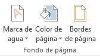
Marca de agua
Normalmente es un texto que se ve al fondo de la página, por ejemplo Confidencial, No copiar, Borrador, Ejemplo y Urgente.
Al hacer clic se desplegará el menú siguiente que te permitirá elegir el que quieras del listado:
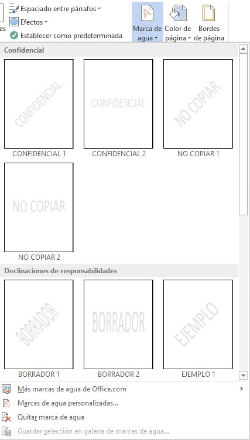
Para quitar la marca de agua de un documento deberás pulsar la opción Quitar marca de agua. Si ningún texto se adapta a
tus necesidades o quieres que la marca de agua sea una imagen (por ejemplo el logo de tu empresa), puedes personalizarla.
Color de página
Al hacer clic, un menú te permite elegir el color en una paleta de colores.
Para recuperar el color blanco, elige la opción Sin color. Y si no encuentras el que quieres en la paleta,
pulsa Más colores.... También puedes crear fondos más complejos, que no sean simplemente de un color sino
que utilicen degradados, texturas y tramas.
Bordes y sombreado
Al pulsar esta opción se abre un cuadro de diálogo como el siguiente:
La forma de aplicar el borde es ir escogiendo las opciones de izquierda a derecha.
-
Primero selecciona el valor para el borde: Ninguno, Cuadro, Sombra, 3D o Personalizado.
-
Luego, selecciona el estilo de línea que quieres aplicar:
-
Si eliges un Estilo de línea, podrás especificar su color y ancho.
-
En cambio, si escoges un Arte, el borde será un motivo realizado por una consecuencia de dibujos.
Por lo tanto sólo podrás establecer un ancho, y en algunos casos el color (cuando el programa lo permita)
porque el color y forma son características propias del dibujo:
-
Por último, elige en la vista previa qué bordes quieres aplicar. De forma predeterminada se muestran bordes
en los cuatro lados, pero activando y desactivando los botones que hay a su lado podrás decidir cuáles mostrar.
También podrás decidir qué ámbito de aplicación tendrán: todo el documento, sólo la primera página, todas excepto la primera...
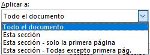
Observación:
Estas tres opciones: marga de agua, color de fondo y bordes, son compatibles. Podrás utilizar
las tres a la vez en un mismo documento, pero ten en cuenta que la marca de agua suele tener un color muy claro y
es posible que no se aprecie con según qué colores de fondo.
Fuente
Cuando hablamos de fuente nos referimos a la forma en que se representan cada una de las letras, números y signos de
puntuación que se escriben como texto.
Como hemos visto se puede dar un estilo diferente a las fuentes del documento a través de los temas y estilos.
Pero en este apartado aprenderemos a realizar estos cambios de forma manual y precisa, para poder, por ejemplo,
aplicar un formato distinto a un texto en concreto.
Podemos modificar la fuente desde la pestaña Inicio grupo Fuente.
Otra opcion es mediante las herramientas de formato, las cuales aparecen automáticamente
al seleccionar una palabra o frase.
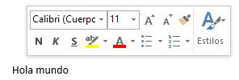
Fuente/Tipos de letra
Cuando decimos que vamos a cambiar la fuente o aplicar una fuente nos referiremos a elegir la tipografía
Por ejemplo en la siguiente imagen se aprecia que la tipografía de fuente actual seleccionada para el cuerpo es
Rockwell. Haciendo clic sobre el pequeño triángulo que hay a su derecha se despliega el listado de fuentes
disponibles en nuestro equipo.
La lista se divide en tres zonas: Fuentes del tema, Fuentes utilizadas recientemente y Todas las fuentes.
De esta manera, si estás utilizando una fuente la encuentraras fácilmente entre las primeras posiciones de la lista.
Observaciones:
- El propio nombre de la fuente está representado en ese tipo de fuente, de forma que podemos ver el
aspecto que tiene antes de aplicarlo.
-
Si conoces el nombre no será necesario que busques la fuente en la lista, puedes escribirlo directamente
en la caja de texto que contiene el nombre de la fuente actual, ya que se trata de un cuadro editable.
A medida que escribes el cuadro se va autorellenando con la fuente que cree que buscas, de modo que es
posible que al introducir únicamente dos o tres letras, ya se muestre la que te interesa.
Tamaño de la fuente
De forma similar podemos cambiar el tamaño de la fuente. Seleccionar el texto y hacer clic en el triángulo
para buscar el tamaño que deseemos, o escribirlo directamente en la caja de texto.
La unidad de medida es el punto (72 puntos = 1 pulgada = 2.54 cm), los tamaños más utilizados son 10 y 12 puntos.
Junto al desplegable de tamaño de fuente veremos dos botones:
que también nos permiten seleccionar el tamaño de fuente, pero esta vez de forma relativa. Cada uno de ellos
tiene una flecha triangular: el de la flecha hacia arriba aumenta el tamaño, y el que apunta hacia abajo disminuye el tamaño.
Efectos básicos
Existen herramientas de estilo que nos permiten realizar cambios sobre un texto.
Basta seleccionar el texto y hacer clic en el botón correspondiente. Al activarse la opción se muestra el fondo anaranjado
(o azul version 2013). Para desactivarlo se sigue el mismo proceso. Se pueden activar varios a la vez
- Negrita (teclas CTRL+ N): Aumenta el grosor de la línea que dibuja los caracteres.
- Cursiva (teclas CTRL+ K): Inclina el texto ligeramente hacia la derecha.
- Subrayado (teclas CTRL+S): Dibuja una línea simple bajo el texto. Si pulsas la pequeña flecha
triangular de su derecha se despliega un menú que te permite cambiar el estilo de la línea, pudiendo elegir entre
líneas onduladas, discontinuas, dobles, gruesas, etc.
- Tachado: Dibuja una línea sobre el texto.
- Subíndice (teclas CTRL+ =): Reduce el tamaño del texto y lo sitúa más abajo que el resto del texto.
- Superíndice (teclas CTRL+ +): Reduce el tamaño del texto y lo sitúa más arriba que el resto del texto.
Subíndice y superíndice son los únicos estilos que no se pueden aplicar a la vez. Porque, obviamente, el texto se
posiciona arriba o abajo, pero no en ambos sitios a la vez.
Mayúsculas y minúsculas
En la pestaña Inicio > grupo Fuente > opción Cambiar a mayúsculas y minúsculas... podemos desplegar un menú desde
la pequeña flecha triangular que nos permite cambiar el formato de mayúsculas a minúsculas en el texto seleccionado.
Las opciones son:
- Tipo oración. La primera letra después de cada punto en mayúsculas el resto en minúsculas.
- minúsculas. Todas las letras en minúsculas.
- MAYÚSCULAS. Todas la letras en mayúsculas.
- Poner en mayúsculas cada palabra. La primera letra de cada palabra en mayúscula y el resto de la palabra en minúsculas.
- Alternar MAY/min. Cambia las mayúsculas por minúsculas y viceversa.
Observación: Si seleccionamos texto y presionamos la combinación de teclas: MAYÚS+F3,
las palabras del texto seleccionado cambian alternativamente a las tres formas: mayúsculas, minúsculas y tipo oración.
Color y efectos de texto
Formato párrafo
Los párrafos son unidades dentro del documento Word que tienen sus propias características de formato,
pudiendo ser diferentes de un párrafo a otro. Las características más importante de formato de párrafo
son la alineación y la sangría, ambas están disponibles en la pestaña Inicio.
Para cambiar las características de formato de un párrafo, basta con seleccionarlo y modificar las características
que queramos.
Alineación
| Izquierda |
Centrada |
Derecha |
Justificada |
| Este párrafo tiene establecida alineación izquierda. |
Este párrafo tiene establecida la alineación centrada. |
Este párrafo tiene establecida alineación derecha. |
Este párrafo tiene una alineación justificada. |
Cuando hablamos de alinear un párrafo nos referimos, normalmente, a su alineación respecto de los márgenes
de la página, pero también podemos alinear el texto respecto de los bordes de las celdas si el texto se encuentra en una tabla.
Sangría y espaciado
Sangria
Aplicar una sangría a un párrafo es desplazar un poco el párrafo hacia la derecha o izquierda. Se realiza seleccionando el párrafo
y haciendo clic en uno de estos botones:
de la pestaña Inicio > grupo Párrafo,
según queramos desplazar hacia la izquierda o hacia la derecha. De esta manera desplazamos el párrafo 1,25 cm. cada vez que hacemos clic en el botón,
pero también se puede desplazar otro valor que deseemos
En la cinta de opciones disponemos de las herramientas más comunes de párrafo, dentro de la pestaña Inicio > grupo Párrafo.
Pero si queremos acceder a todas ellas, debemos abrir el cuadro de diálogo pulsando el botón de la esquina inferior del grupo. Al hacer clic
en el inicializador del cuadro de diálogo Párrafo, veremos la pestaña Sangría y espacio. En ella encontramos las opciones para configurar la
Alineación, el Espaciado o el Interlineado, entre otras.
Podemos fijar los centímetros que queremos que se desplace el párrafo tanto a la izquierda como a la derecha rellenando los campos Izquierda
y/o Derecho.
También podemos indicar uno de los dos tipos de sangría Especial disponibles en la ventana que se despliega al hacer clic en el botón de la derecha.
- Primera línea: desplaza la primera línea del párrafo un poco a la derecha.
- Francesa: desplaza todas las líneas del párrafo hacia la derecha excepto la primera línea.
Espaciado
Aquí podemos fijar el espacio vertical que quedará entre el párrafo que hemos seleccionado y el párrafo anterior y posterior.
Interlineado
El interlineado es el espacio vertical que separa las líneas, podemos modificarlo mediante la ventana de Interlineado
que nos ofrece las siguiente posibilidades:
- Sencillo, es el establecido por defecto.
- 1.5 líneas.
- Doble. Dos líneas.
- Mínimo, al elegir esta opción podemos especificar en el recuadro "En" de la derecha los puntos deseados pero hasta
un valor mínimo para que no se superpongan las líneas.
- Exacto, como la opción anterior pero permitiendo la superposición de las líneas.
- Múltiple, en el recuadro "En" de la derecha podremos poner un número de líneas, incluso con decimales.
Observación: Al final de la ventana contamos con el botón Establecer como predeterminado, que guardará la configuración realizada y la utilizará
por defecto en cada nuevo párrafo de cada documento.
Líneas y saltos de página
Como sabes, al llegar al final de la página se produce un salto de página.
-
Es posible que en un momento dado no quieras que un párrafo quede dividido en dos páginas.
Para conseguir esto debemos activar la casilla Conservar líneas juntas que se encuentra en
el cuadro de diálogo Párrafo > pestaña Líneas y saltos de página.
-
En ocasiones nos interesará que Word divida una palabra en dos líneas, o bien que dos palabras no sean separadas en distintas líneas.
Por ello, haremos una especial mención las funciones de guión y espacio de no separación en el siguiente avanzado
De igual manera en la pestaña Líneas y saltos de página de la siguiente ventana, podemos controlar como se comportan
los saltos de página respecto de los párrafos.
- Control de líneas viudas y huérfanas. Si activamos esta casilla impediremos que por un salto de página automático quede la última
línea de un párrafo en la primera línea de una página (línea viuda). También evitaremos que quede la primera línea de un párrafo como última
línea de una página (línea huérfana).
Conservar con el siguiente. Activando esta casilla impediremos que el párrafo seleccionado y el siguiente sean separados por un salto de página.
- Conservar líneas juntas. Al activar esta casilla impediremos que un salto de página reparta entre dos páginas el párrafo seleccionado.
- Salto de página anterior. Si activamos esta casilla se insertará un salto de página delante del párrafo seleccionado, por lo que el párrafo
seleccionado será el primer párrafo de la página.
- Suprimir números de línea. Esta casilla activada evitará que aparezcan los números de línea, si los hubiere, al lado del párrafo seleccionado.
- No dividir con guiones. Así evitaremos que, en el párrafo seleccionado, las palabras sean divididas con guiones al final de la línea, si es que esta opción se encuentra activada.
Observación: Al final de la ventana contamos con el botón Establecer como predeterminado, que guardará la configuración realizada y la utilizará
por defecto en cada nuevo párrafo de cada documento.
Tabulaciones
Las tabulaciones son posiciones fijas a las cuales se desplaza el cursor cuando pulsamos la tecla de tabulación TAB
Cuando necesitamos insertar texto en columnas o tablas pueden ser muy utiles las tabulaciones.
Word tiene por defecto definidas tabulaciones cada 1.25 cm. Pero se pueden establecer tabulaciones en las
posiciones que deseemos. Además podemos definir la alineación para cada tabulación.
Establecer tabulaciones utilizando la regla horizontal
Las tabulaciones afectan sólo al párrafo en el que se definen. Para establecer cada tabulación tenemos que repetir
cada uno de estos dos pasos:
-
Hacer clic en el extremo izquierdo de la regla horizontal para seleccionar la alineación de la tabulación
que vamos a insertar. Por cada clic que hagamos irán apareciendo repetivamente diferentes iconos que corresponden
a las siguientes alineaciones: izquierda, centrada, derecha, decimal, barra de tabulaciones,
sangría de primera línea y sangría francesa.
-
Colocar el cursor en la regla horizontal en la posición en la que deseemos establecer la tabulación
y hacer clic, veremos cómo se inserta el icono con la tabulación seleccionada.
Observación: Si queremos modificar la posición de una tabulación basta colocar el cursor en el icono de
esa tabulación y hacer clic y arrastrarlo a la nueva posición.
También podemos hacer doble clic sobre una de las marcas de tabulación de la regla horizontal para que aparezca
el cuadro de diálogo de tabulaciones que vemos en la imagen de la derecha donde podemos fijar todas las
tabulaciones de una vez o eliminarlas. O bien, en la pestaña Inicio > grupo Párrafo, iniciamos el
cuadro de diálogo Párrafo. Se pueden establecer las tabulaciones desde el botón Tabulaciones
que se encuentra en la parte inferior izquierda.
Para establecer las tabulaciones escribimos la posición en cm. en el campo Posición, a continuación hacer clic en
el tipo de alineación deseada, luego podemos elegir un tipo de relleno con el que se rellenarán los espacios en
blanco a la izquierda de la tabulación y por ultimo pulsar el botón Fijar, esto hará que la tabulación que acabamos
de crear aparezca en la la lista de tabulaciones.
Si queremos eliminar una tabulación debemos seleccionarla, haciendo clic en la lista y pulsar el botón Eliminar.
También tenemos un botón para eliminar todas las tabulaciones del párrafo en que nos encontramos.
Una vez tengamos todas la tabulaciones preparadas pulsaremos el botón Aceptar y volveremos a nuestro documento donde veremos
en la regla horizontal los iconos de las tabulaciones que acabamos de fijar. Para modificar cualquier tabulación se puede
utilizar esta ventana o la regla horizontal, independientemente de la forma en la que se creó la tabulación.
También. en esta ventana podemos variar la distancia a la que se colocan las tabulaciones predeterminadas, que es de 1.25 cm.
basta con escribir otro número en la ventana.
Numeracion y viñetas
En el grupo Párrafo > pestaña Inicio también encontramos herramientas para crear listas.
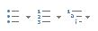
Manualmente
Una lista no es más que un conjunto de elementos ligeramente tabulados y precedidos por un símbolo, dibujo o número.
Utilizaremos una lista numerada o por viñetas dependiendo de si los elementos guardan o no un orden secuencial.
Para aplicarlas, podemos:
-
Pulsar el correspondiente botón y empezar a escribir cada uno de los elementos de la lista.
-
O bien seleccionar un texto ya existente y aplicar el estilo de lista.
Automaticamente
Podemos dejar que Word cree la lista de forma automática.
-
Si empiezas a introducir elementos precedidos por un signo (como - o * ) Word entenderá que quieres
introducir una lista de viñetas.
-
Si lo que haces es introducir elementos precedidos por letras o números también creará una lista, en este caso numérica.
Observaciones:
-
Se inserta un número o viñeta por cada párrafo, es decir, a continuación de la tecla INTRO.
Si quieres que dos elementos estén en la misma viñeta, deberás separarlos por un salto de línea, pulsando MAYÚS+INTRO
en vez de INTRO.
-
Si quieres que un elemento de la lista numérica no empiece por 1 o no siga la secuencia, utiliza la opción
Establecer valor de numeración del submenú que despliega su correspondiente flecha.
-
Una vez hemos completado la lista y queremos continuar con un párrafo normal, hay que pulsar de nuevo la tecla INTRO
después del último elemento, es decir, hay que pulsar dos veces la tecla INTRO.
-
Una característica de los elementos de una lista es que se pueden ordenar alfabéticamente. Lo haremos seleccionándolos
y pulsando el botón Ordenar 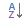 que se
encuentra también en la pestaña Inicio, junto a los botones de lista. En el cuadro de diálogo lo único que debemos
hacer es escoger si queremos una ordenación ascendente o descendente y aceptar.
-
Al pulsar el botón Aumentar sangría antes de introducir un nuevo elemento indicamos que este está un nivel inferior
que el anterior, es decir, indicamos una dependencia. Esto da lugar a las listas multinivel. Las listas multinivel
pueden ser tanto de viñetas como numéricas.
Nivel de lista
También tenemos la opción Cambiar nivel de lista en cada uno de los botones de lista

Para elegir el estilo de lista, lo único que hay que hacer es desplegar la flecha triangular
situada a la derecha de cada uno de los botones. Podemos escoger entre varios modelos, pulsando directamente sobre la pequeña muestra del menú que se despliega.
También puedes crear un estilo de lista personalizado pulsando Definir nueva viñeta, Definir nuevo formato de
número o Definir nueva lista multinivel.
Configuraciones de página
Saltos de linea
-
En Word al escribir un texto hay que teclearlo sin más preocupación. Los saltos de línea se realizan automáticamente
al llegar al margen derecho. Si quieres realizar un cambio de línea, se utiliza la tecla INTRO
(también llamada ENTER o retorno de carro).
-
Word se encarga de que el texto que vas introduciendo se contenga dentro de unos márgenes y pasa a la línea inferior
cuando alcanza el margen derecho. Pero conviene saber que, si algún momento quieres realizar un salto de línea de
forma voluntaria, lo puedes hacer con la combinación de teclas MAYÚS+INTRO.
Saltos de página
Los saltos de página se insertan automáticamente cuando llegamos al margen inferior de una página y seguimos escribiendo.
También se pueden insertar de forma manual si queremos pasar a la página siguiente aunque no hayamos llegado al final,
desde la pestaña Insertar > grupo Páginas > opción Salto de página. 
Observación: En la pestaña Inicio > grupo Párrafo, se cuenta tambien con la
herramienta Mostrar todo  , la cual permite saber si un texto ha sido dividido en bloques
mediante saltos de línea o párrafos.
, la cual permite saber si un texto ha sido dividido en bloques
mediante saltos de línea o párrafos.
Si la utilizamos, el documento se llenará de marcas como las que ves en la imagen:
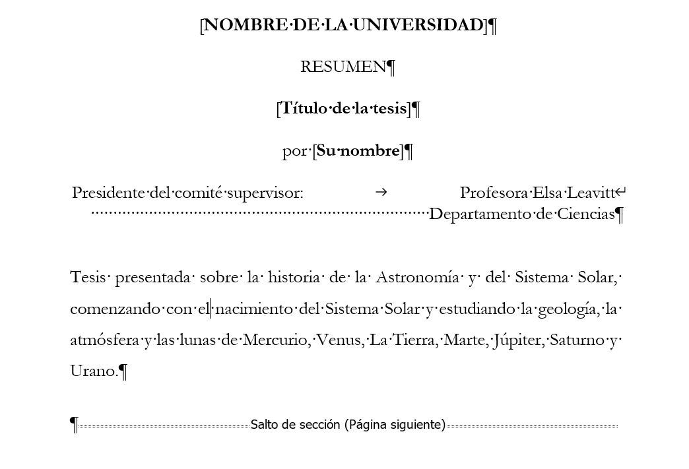
Además de los saltos de línea y los cambios de párrafos también se muestran otros símbolos
como un punto medio que señala que hay un espacio separando las palabras, o una
marca de salto de página.
Para ocultar de nuevo estas marcas debemos pulsar de nuevo el botón .
Encabezado y pie de pagina
Un encabezado o pie de página puede contener texto, información sobre el documento o incluso imágenes. Puede crear
un encabezado o pie de página para todo el documento o tener un encabezado o pie de página diferente para la primera página,
impar. e incluso páginas, o incluso varias secciones.
Un encabezado es un texto que se insertará automáticamente al principio de cada página. Esto es
útil para escribir textos como, por ejemplo, el título del trabajo que se está escribiendo,
el autor, la fecha, etc.
El pie de página tiene la misma funcionalidad, pero se imprime al final de la página, y suele contener los números
de página.
Para modificarlos vamos a la pestaña Insertar y entonces hacemos clic en alguno de los dos botones
(Pie de página o Encabezado) y seleccionamos la opción Editar.
Se mostrará una nueva pestaña, Herramientas para encabezado y pie de página > Diseño, que contiene los
iconos con todas las opciones disponibles:
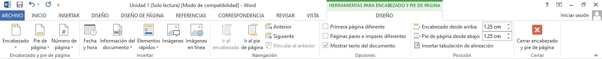
Observa que ha aparecido el Encabezado delimitado por una línea punteada y con los elementos que lo contienen en modo edición.
Ahí podremos teclear el encabezado y, si lo creemos conveniente, insertar numeración de página, fechas o cualquier otro
elemento de la barra de herramientas, como vamos a ver a continuación.
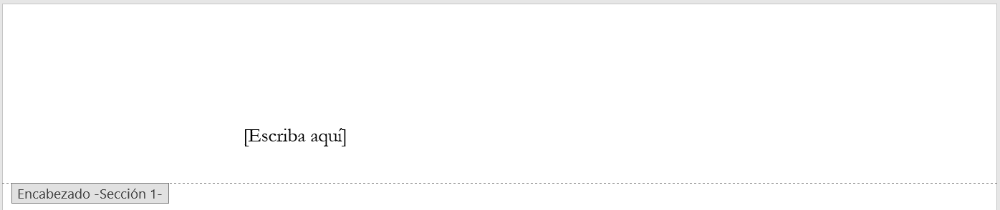
Una vez hayamos acabado de editar el encabezado o pie de página finalizaremos haciendo clic en el botón Cerrar encabezado
y pie de página, a la derecha de la cinta de opciones  .
.
Mediante estos botones podemos pasar del encabezado al pie y viceversa.
Quitar todos los encabezados y pies de página
Vaya a Insertar > Encabezado o Pie de página y después, elija Quitar encabezado o Quitar pie de página.
Si el documento tiene varias secciones, deberá repetir el proceso para cada sección.
En la pestaña Diseño también encontraremos el siguiente grupo de opciones:
Encabezado o pie de página de la primera página
Si marcamos esta casilla podemos definir un encabezado y pie diferente
para la primera página. Esta opción está pensada por ejemplo, para cuando la primera página es la portada
del documento y no conviene que aparezca el mismo encabezado o pie con el número de la página.
- Haga doble clic en el área de encabezado o pie de página.
- Seleccione la opcion Primera página diferente. Se eliminará el contenido del encabezado
o pie de página en la primera página.
- Por el contrario, si lo que desea un encabezado o pie de página en la primera página, agregue
el contenido ahora. Este no aparecerá en las páginas siguientes.
-
Si desea que el encabezado o pie de página solo aparezca en la primera página, vaya al encabezado
o pie de página en la página siguiente y elimine el contenido.
-
Haga clic en Cerrar encabezado y pie de página o presione Esc para salir.
Observaciones:
-
Se puede aplicar Primera página diferente a la primera página de cualquier sección en el documento,
no solo a la primera página.
-
En el área de encabezado o pie de página, debería ver una etiqueta en la primera página que dice
Encabezado de primera página.
Sugerencia:
Si desea que la segunda página comience en 1 en lugar de en 2, vaya a Insertar > Número de página
> Dar formato a los números de página y establezca Iniciar en bajo el rótulo Numeración de páginas
desde 0 en lugar de 1.
Todas las páginas de un documento de Microsoft Word mostrarán el mismo pie de página a menos que
configure diferentes pies de página para diferentes secciones. Incluso después de insertar un salto
de sección, los pies de página tendrán el mismo aspecto en todas las secciones hasta que los
desvincule desactivando el ajuste que el anterior, denominado oficialmente
Vincular al anterior. En Microsoft Word 2007 y 2010, puedes acceder a esta opción en la
cinta de opciones tras abrir la pestaña que contiene las herramientas de pie de página.
Encabezados y pies de página diferentes para páginas pares e impares
Word aplica los mismos encabezados y pies de página en todas las páginas de forma predeterminada.
En muchas ocasiones, deseamos algo diferente en las páginas pares e impares del documento.
Si marcamos la casilla Páginas pares e impares diferentes podemos definir un encabezado y pie diferente para las páginas pares e impares.
Por ejemplo para imprimir el número de página se imprime a la izquierda en las páginas impares y en las
páginas pares imprimirlo a la derecha.
Elementos rápidos
Dentro de esta misma pestaña Diseño del encabezado de página > Grupo Insertar > Elementos rápidos
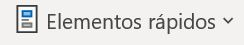
Permite, desde la opción Propiedad del documento, escoger distintos elementos
de un listado desplegable. En ocasiones esta opción ahorra tiempo ya que permite, por ejemplo,
insertar con un sólo clic el autor del documento o la fecha.
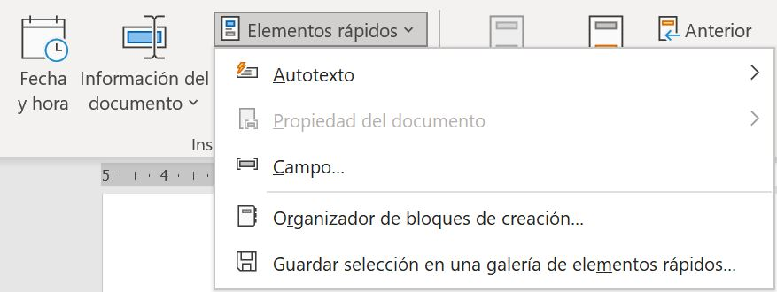
La opción de Elementos rápidos también está disponible directamente en la pestaña Insertar,
pero se incluye en la de Diseño de los encabezados y pies de página porque es una herramienta
muy útil en este tipo de ocasiones. De hecho, el elemento Autotexto es uno de los que más se
prestan a la personalización para mejorar la comodidad de la redacción en Word. Así que probablemente
lo utilizarás más a menudo desde la pestaña Insertar directamente. Con él podemos insertar rápidamente
párrafos completos y demás contenido que solemos repetir constantemente con un sólo clic, como
cabeceras o despedidas en las cartas.
Autotexto
Un autotexto es un texto ya preparado que insertamos en nuestro documento con un sólo
clic. El texto no está a priori en el documento, sino que encontramos un botón que nos permite incluirlo desde
la cinta de opciones.
Esta opción Autotexto la encontraremos en la pestaña Insertar > grupo Texto > Elementos rápidos.
Veremos que se despliega un submenú para escoger el que necesitamos. Al hacer clic en él se insertará allí donde tengamos
el punto de inserción.
Número de página
Un encabezado o pie de página puede contener texto, información sobre el documento o incluso imágenes.
Sin embargo, los elementos más comunes de un encabezado o pie de página son los números de página.
Los números de página pueden ser continuos a través de un documento, todos menos la primera página,
o volver a empezar en cada sección.
Cuando creamos un nuevo documento, Word numera las páginas para poder referenciarlas, ese número es el
que aparece en la parte izquierda de la barra de estado, pero este número de página no aparece en el documento.
Si queremos que los números de página aparezcan en nuestro documento cuando lo imprimamos deberemos
insertarlos desde la pestaña Insertar > grupo Encabezados y pies de página >
Número de página y entonces eligir dónde queremos que aparezca el número.
Al seleccionar una ubicación se despliega una lista de formatos prediseñados para que elijamos
el que más nos guste. Existe una gran cantidad de formatos prediseñados asociados a cada ubicación,
estos están organizados por secciones para facilitarnos la localización del formato que buscamos.
- Simple: Tenemos números simples con diferentes alineaciones.
- Con formas: Los números se escriben dentro de una forma, por ejemplo con cinta.
- Número sin formato: Tenemos los números de página a los cuales se les aplica algún tipo
de formato.
- Página x: El número de página viene acompañado de la palabra Página o Pag.
- Pagina x de y: , Se añade además el número total de páginas del documento
Para ver los encabezados y pies de página en la pantalla de nuestro ordenador tenemos que estar en
modo vista Diseño de Impresión donde se ven en un tono más claro que el texto normal. Una vez
insertado el número de página podemos variar su formato con la opción Formato del número de página.
En el menú Formato de número veremos una lista con posibles formatos predeterminados entre
los que elegir.
Tenemos dos alternativas para indicar en qué número empezará la numeración de las páginas:
- Continuar desde la sección anterior (o empezar desde uno, si ésta es la primera sección).
- Iniciar en el número que especifiquemos en la opción Iniciar en:
Si tenemos estructurado nuestro documento en capítulos, también podemos incluir el número del capítulo
junto con el de la página, marcando la casilla Incluir número de capítulo y seleccionando un formato.
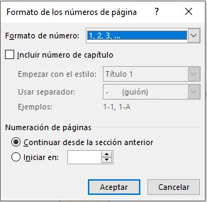
Iniciar la numeración de página más adelante en el documento
- Vaya a Insertar > Encabezado o Pie de página > Editar encabezado o Editar pie de página.
Secciones
Word trata un documento como una única sección hasta que se inserta un saltos de sección. Los saltos de sección de Word
indican cuándo acaba un determinado apartado o sección y permiten establecer
opciones de formato y diseño de página específicas (como numeración de línea, columnas o encabezados y pies de página)
para diferentes partes de un documento. De esta manera, los elementos que comúnmente se aplican a todo el documento
por igual, como el \emph{pie de página} o las \emph{tabulaciones}, terminen en un determinado punto, para poder
configurarlos de forma distinta mas adelante. Puede resultar muy útil para aplicar un formato distinto en las páginas
de un mismo documento o bien en distintas zonas de la misma página.
Ejemplos
- Tener una única columna en la primera mitad de la página y dos columnas en la mitad restante.
- Aplicar una numeración de páginas que empezara de nuevo en cada uno de los temas o capítulos.
- Establecer un tamaño de página y orientación distintas en un mismo documento.
- Aplicar márgenes distintos a una página en concreto, independientemente de los establecidos en el documento, etc.
En general, podemos utilizar saltos de sección para cambiar el diseño o el formato de las páginas del documento.
Para cambiar el formato de un documento, inserte un salto de sección al principio de donde desee el cambio. Configure el cambio
de formato justo después del nuevo salto de sección. Si desea cambiar el formato de nuevo, coloque otro salto de sección.
Si los cambios deben estar en la misma página, elija el salto de sección Continuo. En caso contrario, elija Página siguiente,
Página impar o Saltos de sección Página par.
Para incluir un salto de sección en el documento, nos situamos en la ficha Diseño de página > grupo
Configurar página
Elijamos el tipo de salto de sección que desee:
- Página siguiente:inserta un salto de sección e inicia la nueva sección en la página siguiente.
Este tipo de salto de sección es útil para iniciar nuevos capítulos en un documento.
- Continuo: inserta un salto de sección e inicia la sección nueva en la misma página.
Un salto de sección continuo es útil para crear cambios de formato, como un número diferente de columnas en una página.
- Página par o imparinsertan un salto de sección e inician la nueva sección en la siguiente página par o impar, respectivamente.
Para iniciar los capítulos del documento siempre en una página impar o par, use la opción Página impar o Salto de sección página par.
Modificar un salto de sección
Haga clic o pulse en el salto de sección que desea cambiar.
Luego, en la pestaña Diseño, selecciona el botón Iniciador de configuración de página.
Una vez abierta la ventana, seleccionemos la pestaña Diseño y en la opcion Iniciar sección
elegir la opción a la que deseamos cambiar el salto de sección:
Eliminar saltos de sección
Si no se muestran los saltos de sección, selecciona Inicio > Mostrar u ocultar
 para mostrar saltos de sección.
para mostrar saltos de sección.
Los saltos de sección tienen este aspecto:
Coloque el cursor justo antes del salto de sección y presione Eliminar.
También para eliminar un salto de sección podemos realizar lo siguiente:
-
Cambiar a la vista Borrador desde la pestaña Vista.
-
Situar el cursor en la línea que representa el salto.
-
Pulsar la tecla SUPR.
Advertencia
-
Al eliminar un salto de sección, Word combina el texto antes y después del salto en una sección. La nueva sección combinada
usará el formato de la sección que siguió al salto de sección.
- Si desea que la sección use el formato, encabezados o pies de página de antes del salto de sección, use Vincular a anterior
en lugar de quitar el salto de sección.